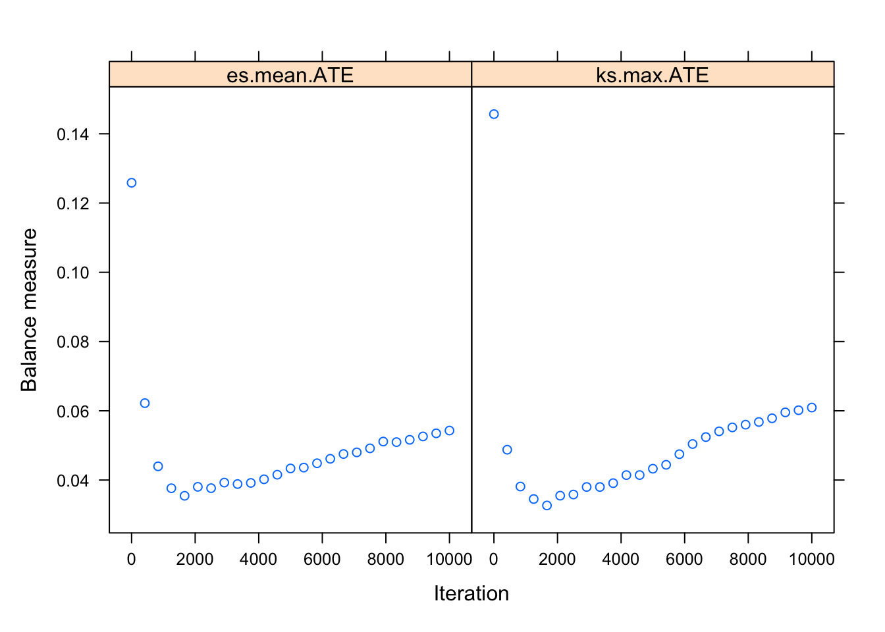
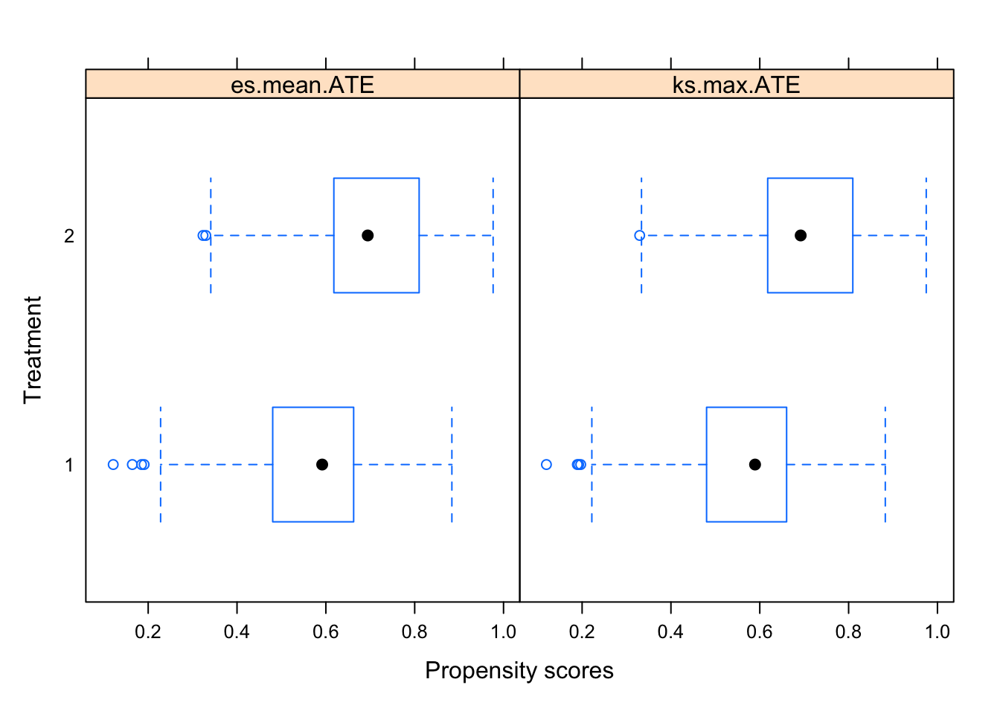
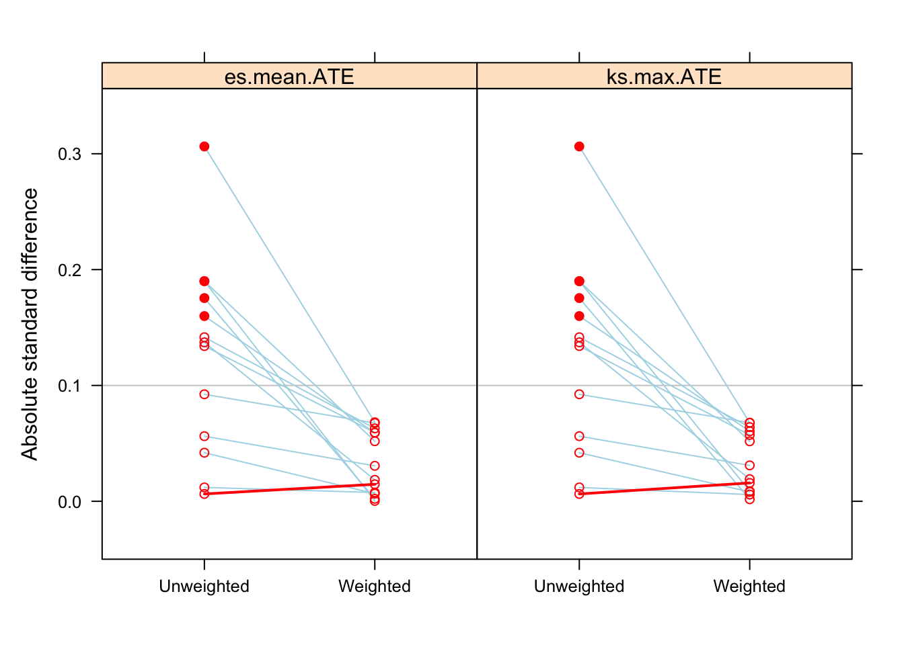
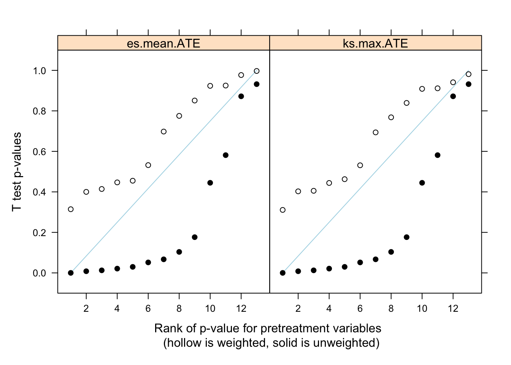
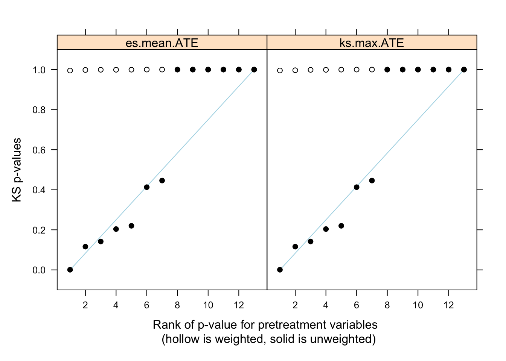
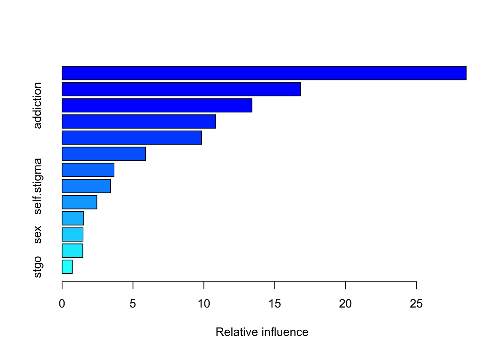

Code project HIV - Adherence
Analysis data
Pupulation
| Characteristic | 0, N = 7311 | 1, N = 721 |
|---|---|---|
| sex | ||
| men | 689 (94%) | 67 (93%) |
| women | 42 (5.7%) | 5 (6.9%) |
| age | 37 (31, 46) | 36 (30, 44) |
| employed | ||
| 0 | 191 (26%) | 28 (39%) |
| 1 | 540 (74%) | 44 (61%) |
| insurance | ||
| A/B | 354 (48%) | 40 (56%) |
| C/D | 377 (52%) | 32 (44%) |
| comorbidities | 228 (31%) | 24 (33%) |
| migrant | 194 (27%) | 22 (31%) |
| education.level | ||
| primary | 15 (2.1%) | 3 (4.2%) |
| secondary | 209 (29%) | 25 (35%) |
| Terciary | 507 (69%) | 44 (61%) |
| timeOnART | 416 (57%) | 38 (53%) |
| stgo | 706 (97%) | 71 (99%) |
| housing | 536 (73%) | 50 (69%) |
| self.stigma | 718 (98%) | 69 (96%) |
| addiction | 465 (64%) | 49 (68%) |
| mental.health | 472 (65%) | 48 (67%) |
| adherent | 491 (67%) | 35 (49%) |
| 0: Indetectable, 1: Detectable | ||
| 1 n (%); Median (IQR) | ||
| Characteristic | 0, N = 2771 | 1, N = 5261 |
|---|---|---|
| sex | ||
| men | 259 (94%) | 497 (94%) |
| women | 18 (6.5%) | 29 (5.5%) |
| age | 36 (30, 44) | 38 (32, 46) |
| VL.dectable | 37 (13%) | 35 (6.7%) |
| employed | ||
| 0 | 71 (26%) | 148 (28%) |
| 1 | 206 (74%) | 378 (72%) |
| insurance | ||
| A/B | 137 (49%) | 257 (49%) |
| C/D | 140 (51%) | 269 (51%) |
| comorbidities | 75 (27%) | 177 (34%) |
| migrant | 74 (27%) | 142 (27%) |
| education.level | ||
| primary | 8 (2.9%) | 10 (1.9%) |
| secondary | 95 (34%) | 139 (26%) |
| Terciary | 174 (63%) | 377 (72%) |
| timeOnART | 171 (62%) | 283 (54%) |
| stgo | 271 (98%) | 506 (96%) |
| housing | 188 (68%) | 398 (76%) |
| self.stigma | 268 (97%) | 519 (99%) |
| addiction | 204 (74%) | 310 (59%) |
| mental.health | 191 (69%) | 329 (63%) |
| 0: Non-Adherent, 1: Adherent | ||
| 1 n (%); Median (IQR) | ||
Employment status as outcome
Prepensity Score and weights
Propensity score was calculate using twang package. The variables included were: sex, age, employed, insurance, comorbidities, migrant, education.level, timeOnART, stgo, housing, self.stigma, addiction, mental.health. ATE was the treatment effect selected
Table to see the balance before and after weight
| tx.mn | tx.sd | ct.mn | ct.sd | std.eff.sz | stat | p | ks | ks.pval | |
|---|---|---|---|---|---|---|---|---|---|
| sex | 0.055 | 0.228 | 0.065 | 0.247 | -0.042 | -0.552 | 0.581 | 0.010 | 1.000 |
| age | 39.770 | 10.764 | 37.783 | 9.731 | 0.190 | 2.652 | 0.008 | 0.085 | 0.142 |
| employed | 0.719 | 0.450 | 0.744 | 0.437 | -0.056 | -0.764 | 0.445 | 0.025 | 1.000 |
| insurance | 0.511 | 0.500 | 0.505 | 0.501 | 0.012 | 0.161 | 0.872 | 0.006 | 1.000 |
| comorbidities | 0.337 | 0.473 | 0.271 | 0.445 | 0.142 | 1.948 | 0.052 | 0.066 | 0.413 |
| migrant | 0.270 | 0.444 | 0.267 | 0.443 | 0.006 | 0.086 | 0.932 | 0.003 | 1.000 |
| education.level | 1.698 | 0.499 | 1.599 | 0.547 | 0.190 | 2.500 | 0.013 | 0.089 | 0.116 |
| timeOnART | 0.538 | 0.499 | 0.617 | 0.487 | -0.160 | -2.177 | 0.030 | 0.079 | 0.204 |
| stgo | 0.962 | 0.191 | 0.978 | 0.146 | -0.092 | -1.353 | 0.176 | 0.016 | 1.000 |
| housing | 0.757 | 0.430 | 0.679 | 0.468 | 0.175 | 2.310 | 0.021 | 0.078 | 0.220 |
| self.stigma | 0.987 | 0.115 | 0.968 | 0.178 | 0.137 | 1.629 | 0.104 | 0.019 | 1.000 |
| addiction | 0.589 | 0.492 | 0.736 | 0.441 | -0.306 | -4.315 | 0.000 | 0.147 | 0.001 |
| mental.health | 0.625 | 0.484 | 0.690 | 0.464 | -0.134 | -1.834 | 0.067 | 0.064 | 0.446 |
| tx.mn | tx.sd | ct.mn | ct.sd | std.eff.sz | stat | p | ks | ks.pval | |
|---|---|---|---|---|---|---|---|---|---|
| sex | 0.055 | 0.229 | 0.054 | 0.226 | 0.007 | 0.094 | 0.925 | 0.002 | 1.000 |
| age | 39.047 | 10.373 | 38.505 | 10.177 | 0.052 | 0.625 | 0.532 | 0.031 | 0.998 |
| employed | 0.731 | 0.444 | 0.744 | 0.437 | -0.031 | -0.388 | 0.698 | 0.014 | 1.000 |
| insurance | 0.513 | 0.500 | 0.517 | 0.501 | -0.008 | -0.096 | 0.924 | 0.004 | 1.000 |
| comorbidities | 0.317 | 0.466 | 0.287 | 0.453 | 0.063 | 0.817 | 0.414 | 0.029 | 0.999 |
| migrant | 0.271 | 0.445 | 0.264 | 0.442 | 0.015 | 0.188 | 0.851 | 0.007 | 1.000 |
| education.level | 1.670 | 0.517 | 1.670 | 0.524 | 0.000 | 0.004 | 0.997 | 0.003 | 1.000 |
| timeOnART | 0.564 | 0.496 | 0.593 | 0.492 | -0.059 | -0.747 | 0.455 | 0.029 | 0.999 |
| stgo | 0.966 | 0.182 | 0.978 | 0.147 | -0.068 | -1.007 | 0.314 | 0.012 | 1.000 |
| housing | 0.737 | 0.441 | 0.738 | 0.441 | -0.002 | -0.029 | 0.977 | 0.001 | 1.000 |
| self.stigma | 0.984 | 0.127 | 0.981 | 0.137 | 0.018 | 0.286 | 0.775 | 0.003 | 1.000 |
| addiction | 0.635 | 0.482 | 0.667 | 0.472 | -0.068 | -0.842 | 0.400 | 0.033 | 0.995 |
| mental.health | 0.644 | 0.479 | 0.672 | 0.470 | -0.059 | -0.761 | 0.447 | 0.028 | 0.999 |
| tx.mn | tx.sd | ct.mn | ct.sd | std.eff.sz | stat | p | ks | ks.pval | |
|---|---|---|---|---|---|---|---|---|---|
| sex | 0.056 | 0.230 | 0.054 | 0.226 | 0.008 | 0.115 | 0.909 | 0.002 | 1.000 |
| age | 39.049 | 10.375 | 38.507 | 10.171 | 0.052 | 0.626 | 0.531 | 0.032 | 0.997 |
| employed | 0.730 | 0.444 | 0.744 | 0.437 | -0.031 | -0.394 | 0.694 | 0.014 | 1.000 |
| insurance | 0.514 | 0.500 | 0.517 | 0.501 | -0.006 | -0.074 | 0.941 | 0.003 | 1.000 |
| comorbidities | 0.317 | 0.466 | 0.287 | 0.453 | 0.064 | 0.833 | 0.405 | 0.030 | 0.999 |
| migrant | 0.271 | 0.445 | 0.264 | 0.442 | 0.016 | 0.203 | 0.839 | 0.007 | 1.000 |
| education.level | 1.671 | 0.517 | 1.667 | 0.525 | 0.009 | 0.111 | 0.911 | 0.003 | 1.000 |
| timeOnART | 0.564 | 0.496 | 0.594 | 0.492 | -0.060 | -0.766 | 0.444 | 0.030 | 0.999 |
| stgo | 0.966 | 0.182 | 0.978 | 0.147 | -0.068 | -1.014 | 0.311 | 0.012 | 1.000 |
| housing | 0.738 | 0.440 | 0.737 | 0.441 | 0.002 | 0.024 | 0.981 | 0.001 | 1.000 |
| self.stigma | 0.984 | 0.127 | 0.981 | 0.137 | 0.019 | 0.295 | 0.768 | 0.003 | 1.000 |
| addiction | 0.634 | 0.482 | 0.667 | 0.472 | -0.068 | -0.837 | 0.403 | 0.033 | 0.996 |
| mental.health | 0.644 | 0.479 | 0.671 | 0.471 | -0.057 | -0.735 | 0.463 | 0.027 | 1.000 |
n.treat n.ctrl ess.treat ess.ctrl max.es mean.es max.ks max.ks.p
unw 526 277 526 277 0.3063 0.1264 0.1471 NA
es.mean.ATE 526 277 502 238 0.0682 0.0346 0.0328 NA
ks.max.ATE 526 277 503 239 0.0679 0.0353 0.0325 NA
mean.ks iter
unw 0.0529 NA
es.mean.ATE 0.0149 1813
ks.max.ATE 0.0151 1682These are graph to check the PS performance






var rel.inf
age age 28.517
education.level education.level 16.837
addiction addiction 13.392
timeOnART timeOnART 10.837
housing housing 9.839
insurance insurance 5.890
comorbidities comorbidities 3.661
self.stigma self.stigma 3.407
employed employed 2.449
migrant migrant 1.525
sex sex 1.474
mental.health mental.health 1.458
stgo stgo 0.713Regression models
I used two functions for determining ATE. One was svyglm from the survey package which returned robust standard errors (SE). The other was the glm package which returned inadequate SE, but use bootstrapping to get the confidence intervals.
Additionally, I calculated ATE using only weight and a double robust approach which consists in using the weights but also adjusting for the covariates (model specification). In that case, if one of the two methods is wrongly specify one still can get valid estimates
Robust standard errors
- Using only the weights
| term | estimate | std.error | statistic | p.value | conf.low | conf.high |
|---|---|---|---|---|---|---|
| (Intercept) | 1.147 | 0.159 | 0.865 | 0.388 | 0.840 | 1.57 |
| employed1 | 0.932 | 0.183 | -0.386 | 0.700 | 0.651 | 1.33 |
- Double robust estimates (DRE)
| term | estimate | std.error | statistic | p.value | conf.low | conf.high |
|---|---|---|---|---|---|---|
| (Intercept) | 1.345 | 1.0676 | 0.2777 | 0.781 | 0.165 | 10.94 |
| employed1 | 0.936 | 0.1954 | -0.3393 | 0.734 | 0.638 | 1.37 |
| sex1 | 0.960 | 0.3395 | -0.1202 | 0.904 | 0.493 | 1.87 |
| age | 1.006 | 0.0102 | 0.5646 | 0.573 | 0.986 | 1.03 |
| insurance1 | 0.971 | 0.1637 | -0.1784 | 0.858 | 0.704 | 1.34 |
| comorbidities1 | 1.187 | 0.1829 | 0.9375 | 0.349 | 0.829 | 1.70 |
| migrant1 | 1.036 | 0.1918 | 0.1829 | 0.855 | 0.711 | 1.51 |
| education.level1 | 1.231 | 0.5873 | 0.3538 | 0.724 | 0.389 | 3.90 |
| education.level2 | 1.238 | 0.5825 | 0.3661 | 0.714 | 0.394 | 3.88 |
| timeOnART1 | 0.790 | 0.1817 | -1.2989 | 0.194 | 0.553 | 1.13 |
| stgo1 | 0.637 | 0.4901 | -0.9208 | 0.357 | 0.243 | 1.67 |
| housing1 | 0.989 | 0.1806 | -0.0615 | 0.951 | 0.694 | 1.41 |
| self.stigma1 | 1.108 | 0.5246 | 0.1960 | 0.845 | 0.396 | 3.10 |
| addiction1 | 0.873 | 0.1858 | -0.7297 | 0.466 | 0.606 | 1.26 |
| mental.health1 | 0.904 | 0.1753 | -0.5754 | 0.565 | 0.641 | 1.28 |
Logistic regression and bootstrapping
- Uisng only weights
[1] "Employment: 0.932"[1] "95% CI: 0.65 - 1.336"- Double robust estimates (DRE)
[1] "Employment: 0.936"[1] "95% CI: 0.628 - 1.394"